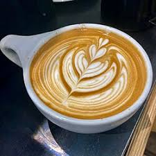

Classic Cafe Drink Recipes and Ratios
Once you master the espresso shot, the real fun begins: combining it with milk and other ingredients to create the beloved classics. Each drink has a specific, time-honored ratio that defines its character, texture, and flavor profile. Understanding these ratios is essential, whether you are a home barista or just appreciate knowing what you're ordering. This section details the fundamental ratios that make up the world's most popular coffee beverages.
Fundamental Espresso Drink Ratios (Espresso:Milk:Foam)
- Espresso (Doppio): 60ml of concentrated coffee. This is the base for everything.
- Macchiato (Traditional): 1 part Espresso to a *tiny* dot of foamed milk (1:0.5:0). Intense coffee flavor, marked with milk.
- Cortado/Gibraltar: Equal parts Espresso and steamed milk (1:1:0). Perfect for tasting the coffee blend without too much dilution.
- Cappuccino: Equal parts Espresso, steamed milk, and airy, foamed milk (1:1:1). Known for its dry foam texture.
- Latte: 1 part Espresso to 3-5 parts steamed milk, with a thin layer of foam (1:3-5:0.5). Creamiest and most popular, allowing for creative latte art.
- Americano: Espresso diluted with hot water. The classic ratio is usually 1 part Espresso to 2 parts hot water (1:2).
Mastering these recipes allows for endless customization. The difference between a latte and a cappuccino might seem small, but the textural contrast created by the milk ratio is what separates these iconic drinks.